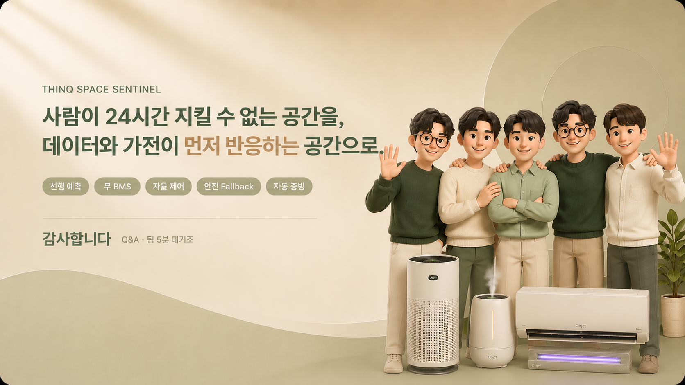

6주, 기획부터 검증까지 이렇게 진행했습니다
쉽게 말해, 누가·언제·무엇을 했는지 한눈에 — 그리고 모든 단계가 GitHub에 남습니다.
STEP 1 · 발견문제와 데이터를 정의
›
2W2
데이터 수집
VOC 4.8만건·LDA 5토픽
→
STEP 2 · 구축설계에서 통합까지 직접 개발
→
역할
박진영 PM·ML|
박진 Backend|
윤재영 Frontend|
정욱현 DevOps·Edge|
조근범 기획·디자인
결론모든 단계가 GitHub에 기록 — 과정이 곧 증빙입니다. 그렇다면, 왜 이 문제인가?
LG DX School
2 / 28
BX.추진배경SWOT 분석
SWOT으로 본 우리의 자리 — 빈칸은 ‘안전’
쉽게 말해, 강점(이미 깔린 가전) × 기회(아무도 안 한 안전) — 새 하드웨어가 아니라 가전 위에 얹는 안전 SaaS가 답입니다.
S강점 Strengths
33조가전 매출 · 2024 최대
·이미 깔린 센서·제어 인프라 + 가전 1위 브랜드
·전국 설치 기반 + ThinQ 연결망
·새 HW 없이 안전 SaaS 얹는 유일한 위치
W약점 Weaknesses
6%가전 판매 영업이익률
·월풀·일렉트로룩스·하이얼 전부 한 자릿수
·판매 성장 둔화 — 제조는 레드오션
·연결·구독도 이미 포화
O기회 Opportunities
빈칸 0통합 안전 신호 — 경쟁 0
·SaaS 매출총이익 70% (가전 6% vs)
·LG 2030 이익 3/4를 B2B·플랫폼
·요양병원 집단감염 = 절실한 수요
T위협 Threats
3곳경쟁 진입 — 부분만
·에어딥·아이레카 = 모니터링만
·KT·SKT 스마트병원 = 인프라만
·부품 많고 ‘잇는 자’ 없음 → 선점 못하면 뺏김
결론 · SO 전략강점 × 기회 → ‘안전’ SaaS 확정. 그럼 어디서 먼저 둘까? — 우리는 감염 위험이 가장 큰 공간을 기준으로 찾았고, 그곳이 요양병원이었습니다.
LG DX School
4 / 28
BX.추진배경표적 시장 · 시장 규모
왜 요양병원인가 — 가장 절실하고, 확장 교두보다
보수적 추정 기준 · SaaS + 가전 풀스루 합산 · 파일럿으로 WTP 검증 예정.
왜 요양병원?
집단감염 최고위험
밀집·고령·기저질환 — 한 명 감염이 병동 전체로
24시간 감시 불가
의료진 부족·야간 단독 — 사람 눈은 늘 비어
감염관리 증빙 의무
제도적 기록 요구 — 수기로는 끊김
1,342개소 교두보
요양원·병원·다중시설로 확장 가능
TAM
Total Addressable Market
~5,000억
국내 실내공기질 의무관리 시설 전체
포함 시설
의료
요양
교육
오피스
다중이용시설 × SaaS + 가전 풀스루
스마트홈 시장 연 9~27% 성장 · 2030 목표
SAM
Serviceable Addressable Market
~700억
집단감염 위험 의료·요양시설
기관 구성 · ~7,000기관
× 연 1,000만원
→ 병원·학교·오피스 확장 시 SAM 3배↑
SOM
Serviceable Obtainable Market
~65억
파일럿 → 12개월 목표 42개 기관
매출 구성 · ~64억
200병상 기준 · 파일럿 3곳
정직: MOU 0건 · 파일럿 LOI가 다음 마일스톤
전략
요양병원 SOM 확보 → SAM 의료·교육 확장 → LG ThinQ 가전 풀스루로 TAM 도달
보수적 추정 · 실제 WTP 파일럿으로 검증
결론그래서 우리의 집중 과제는 하나 — 사람이 아니라 공간이 먼저 반응하게.
LG DX School
5 / 28
BX.고객감동목표수동 → 선제 목표
수동적 사후 대응을, 선제적 자동 대응으로
쉽게 말해, 사람이 일일이 챙기던 일을 공간이 스스로 하도록 바꿉니다.
Before · 감각·수동·사후
인지답답할 때 비로소
대응사람이 직접 조작
기록수기 일지 · 누락
증빙사실상 불가
After · 데이터·자동·선제
인지위험 사전 인지
대응가전 자동 가동
기록초 단위 자동 로깅
증빙리포트 자동 생성
집중 과제지역 감염이 병원에 닿기 전, 공간을 자동으로 준비시킨다
간호사시설원장보호자
LG DX School
결론수동→선제로 가려면 근거가 필요합니다 — 어떻게 모았는지 데이터로.
6 / 28
BX.데이터수집정성·정량 데이터 · 신뢰성
정성·정량 두 축 — 체계적으로 모으고, 전건 재현됩니다
쉽게 말해, ‘왜(정성 VOC)’와 ‘얼마나 위험한가(정량 외부지표)’를 나눠 — 수집 과정과 출처를 전부 공개했습니다.
정성 · VOC 텍스트 마이닝 — 4채널 · 51키워드 (체계성)
78,087건 수집
4채널 · 51키워드
노이즈 필터 후 75,633건 분석
VOC 핵심 키워드 — 빈도 (Kiwi 형태소 · LDA)
수가
욕창
면회제한
치매
집단감염
청구
인증평가
냄새
낙상사고
폐업
인력부족
감염관리
공기청정기
야간근무
학대
힘들다
환기
부모님후회
신뢰성 = 전건 재현(크롤러·LDA 스크립트 공개) · 종사자 부정도 84%가 PM 4.8만건 분석값과 독립 재현 일치
정량 · 5 Layer 외부 + 실내 센서 — 출처 전 기관 명기 (신뢰성)
실내 센서 ● 실측 테스트
코웨이 실측 PM·온습도 + CO₂(공청기·가스 트리거 보조, 표준센서 SCD41 한 줄 교체)
결론체계적 수집 + 전건 재현 — 자의적이지 않은 신뢰 근거를 확보했다
LG DX School
7 / 28
P3+CX · 전처리 · LDA 토픽 결정
n=5 통계적 근거데이터가 스스로 5개 주제로 — 그 중 ‘감염·안전’이 우리 자리
78,087건을 5단계로 정제해 LDA 투입 → 통계가 가리킨 최적 5개 주제 중 T4가 곧 Sentinel.
→→→불용어
CountVec
max500·min_df3
왜 토픽 5개?
Perplexity·Coherence 둘 다 n=5에서 변곡 — 더 늘려도 품질 정체.
데이터가 스스로 나눈 통계적 신호
T4
감염·안전 ← Sentinel 핵심
감염·관리·코로나·예방·집단·낙상
결론5만 건이 스스로 5개 주제로 나뉘고, 그 중 ‘감염·안전’(T4)이 Sentinel이 풀 핵심 경험.
9 / 28
LG DX School
P4CX · 타깃 · 페르소나
고객 핵심포인트
1차 교두보 = 전국 요양병원 1,342개소
쉽게 말해, 구매자·운영자·사용자·수혜자가 모두 다른 욕구를 가집니다.
 결재 · 구매
결재 · 구매이정숙 병원장 · 62
 운영자
운영자김춘식 시설관리 · 50대
 주사용자
주사용자김정애 간호사 · 45
 수혜 · 평판
수혜 · 평판박지원 보호자 · 38
병원장 · 핵심 완료
[증빙 PDF 받기]
민원 전 면책 근거 자동 확보
시설관리자 · 핵심 완료
[제어 현황 보기]
가전 이상 즉시 파악
간호사 · 핵심 완료
[경보 확인하기]
수기 없이 야간 대응 완료
보호자 · 핵심 완료
[안심 리포트 보기]
부모님 상태 즉시 확인
결론이들이 실제 겪는 경험을 한 장에 모으면 결론이 보입니다.
LG DX School
10 / 28
P4+CX · 병원장 페르소나 · LDA 토픽 분석
pyLDAvis · 토픽모델링
병원장의 머릿속, LDA로 직접 들어가봤습니다
쉽게 말해, 병원장 발화는 위기대응·돌봄·예방·신고의무 네 갈래로 또렷이 나뉩니다.
ACTOR
위험을 미리 알고 대응하고 싶은 병원장
Desire
예방·대응 절차를 지키고 있다는 증빙을 남기고 싶음
Goal
감염 위기를 사전에 막고 책임을 다하고 싶다
Pain Points
의무 신고·기록 절차가 번거롭고, 대응했다는 근거가 부족해 불안함
Action6
지역 감염 경보 발령 즉시 원내 대응 체계 가동 및 가전 자동 제어
Context
지역 감염병 유행·집단발생 위기 상황 또는 원내 확진자 발생
Keywords
감염병 · 환자 · 대응 · 전염병 · 지역 · 체계 · 위기
Action7
야간 요양보호사 배치 조정 및 노인 방문·돌봄 서비스 품질 관리
Context
요양원 일상 운영 — 어르신 돌봄과 야간 단독 근무 상황
Keywords
노인 · 요양원 · 서비스 · 방문 · 보호 · 어르신 · 야간
Action5
예방접종·환기·위생 교육 정기 시행 및 공기 환경 자동 관리
Context
감염 예방 위한 일상적 위생 관리 및 직원·입소자 교육 활동
Keywords
예방 · 감염 · 코로나 · 교육 · 환기 · 위생 · 백신
Action4
이상 징후 발생 시 당국 신고·진단·기록 의무 절차 즉시 이행
Context
감염사고·낙상 등 법적 의무 보고 대상 발생 및 행정처분 대응
Keywords
정보 · 의무 · 신고 · 진단 · 기록 · 절차 · 이상
방법
병원장(시설장) 페르소나 코퍼스 · LDA 토픽모델링 · pyLDAvis / Intertopic Distance Map(MDS) · 상위 4개 토픽
LG DX School
11 / 28
P4+BCX · 시설관리자 페르소나 · LDA 토픽 분석
pyLDAvis · 토픽모델링
시설관리자의 머릿속, LDA로 직접 들어가봤습니다
쉽게 말해, 시설관리자 발화는 세 갈래로 또렷이 나뉩니다.
ACTOR
시설관리자
Desire
기기와 환경 상태를 한눈에 파악해 선제적으로 운영하고 싶음
Goal
시설과 환자 상태를 빠짐없이 챙기고 싶다
Pain Points
사람이 일일이 점검·기록해야 하고, 야간 인력 공백 시 대응이 늦어짐
Action3
환자 건강 상태와 환경 기기를 모니터링하며 파악
Context
야간·주말에 사람이 일일이 환자 상태와 기기를 확인하기 어려운 상황
Keywords
치료 · 재활 · 상태 · 모니터링 · 공기청정기
Action4
감염 방역 점검과 신고 절차를 수행하며 대응
Context
감염 시즌마다 신고·격리 기준이 갱신되어 즉시 대응이 필요한 상황
Keywords
감염 · 예방 · 신고 · 방역 · 점검 · 격리
Action5
시설 운영과 인력·자격 기준을 관리하며 점검
Context
인력 공백 속에서 시설 안전과 종사자 자격을 관리해야 하는 상황
Keywords
시설 · 안전 · 인력 · 교육 · 자격 · 종사
방법
시설관리자 페르소나 코퍼스 · LDA 토픽모델링 · pyLDAvis / Intertopic Distance Map(MDS) · 상위 4개 토픽
LG DX School
12 / 28
P4+CCX · 간호사 페르소나 · LDA 토픽 분석
pyLDAvis · 토픽모델링
간호사의 머릿속, LDA로 직접 들어가봤습니다
쉽게 말해, 간호사 발화는 세 갈래로 또렷이 나뉩니다.
ACTOR
환자를 직접 돌보는 간호사
Desire
환자 상태 변화를 실시간으로 알고 즉시 대응하고 싶음
Goal
야간에도 빠짐없이 환자를 살피고 적기에 대응하고 싶다
Pain Points
다수 환자를 혼자 살펴 이상을 놓치기 쉽고, 수기라 증빙이 누락됨
Action8
환자 활력징후와 상태를 수시로 관찰하고 간호 기록을 작성
Context
다수 환자를 동시에 돌보며 이상 징후를 놓치지 않아야 하는 상황
Keywords
간호 · 활력징후 · 관찰 · 기록 · 투약
Action6
손위생과 격리 수칙을 지키며 감염 전파를 차단
Context
면역 취약 환자가 많아 작은 감염도 집단 발생으로 번질 수 있는 상황
Keywords
감염 · 격리 · 위생 · 손소독 · 방역 · 마스크
Action1
야간 순회로 낙상·응급 상황을 조기에 발견하고 대응
Context
야간 인력이 적어 한 명이 여러 병실을 돌봐야 하는 상황
Keywords
야간 · 순회 · 낙상 · 응급 · 호출 · 대응
방법
간호사 페르소나 코퍼스 · LDA 토픽모델링 · pyLDAvis / Intertopic Distance Map(MDS) · 상위 4개 토픽
LG DX School
13 / 28
P4+DCX · 보호자 페르소나 · LDA 토픽 분석
pyLDAvis · 토픽모델링
보호자의 머릿속, LDA로 직접 들어가봤습니다
쉽게 말해, 보호자 발화는 세 갈래로 또렷이 나뉩니다.
ACTOR
부모님을 시설에 맡긴 보호자
Desire
떨어져 있어도 부모님 상태를 실시간으로 확인하고 싶음
Goal
면회 없이도 부모님이 안전하게 지내는지 늘 안심하고 싶다
Pain Points
직접 볼 수 없어 상태를 알 길 없고, 사고가 나도 사후에야 통보받음
Action4
입원·진료비와 장기요양 등급·급여 절차를 챙기고 부담을 점검
Context
요양 비용과 보험·수가 부담이 커 가족이 직접 행정 절차를 챙겨야 하는 상황
Keywords
보험 · 급여 · 등급 · 비용 · 진료 · 수가
Action1
방문·동행으로 부모님의 일상 돌봄과 복지 상태를 살핌
Context
노인·장애인 돌봄을 요양보호사와 가족이 나눠 맡아야 하는 상황
Keywords
노인 · 복지 · 방문 · 보호 · 돌봄 · 요양
Action3
집단감염·호흡기 질환을 막기 위해 환기·방역·예방접종을 챙김
Context
면역 취약 어르신이 모여 작은 감염도 빠르게 번질 수 있는 상황
Keywords
감염 · 코로나 · 환기 · 방역 · 위생 · 예방
방법
보호자 페르소나 코퍼스 · LDA 토픽모델링 · pyLDAvis / Intertopic Distance Map(MDS) · 상위 4개 토픽
LG DX School
14 / 28
P4+DCX · 핵심 경험 컨셉 · 관찰 · 고찰 · 통찰
Pain 수렴점공간이 사람보다 먼저 반응한다 — 그 대응이 자동 증빙으로 남는다
네 사람(이정숙·김춘식·김정애·박지원)의 Pain이 한 점으로 수렴 → 본 것·따진 것·내린 결론.
1관찰Observe
‘24시간 안전’을 원하지만, 사람의 눈은 늘 비어 있다
· 야간 단독 근무
· 가전 오작동 인지 불가
· 수기 기록만
· 사고 후 증빙 불가
→
2고찰Reflect
위험은 24시간인데 사람의 감시는 끊긴다 — 구조의 문제
· 한 명이 전 구역
· 보이지 않는 위험
· 늦은 수동 대응
· 끊기는 수기 기록
→
3통찰Insight
그래서 사람이 아니라, 공간이 먼저 반응해야 한다
· 공간이 먼저 인지
· 가전 자동 즉시 대응
· 초 단위 자동 증빙
· 보호자 실시간 공유
CX 기준 문장
"사용자가 처음 들어와도 망설임 없이 핵심 행동을 완료하고, 과정 중 불편함이나 혼란 없이 긍정적인 경험을 얻는다."
결론감시·대응·기록을 사람 → 공간으로 — 이 컨셉이 네 Pain의 수렴점. 다음 CAM으로 확인합니다.
15 / 28
LG DX School
P4+ECX · 4D 경험 차원 · 심리·물리·관계·시스템
4D-CX
하나의 경험을 네 차원으로 — 4D-CX
심리·물리·관계·시스템 네 차원에서 — 각 차원이 한 페르소나의 경험을 책임집니다.
확신증빙 불안 → 확신 · 자동 기록으로 책임 부담에서 해방
신뢰고립감 해소 · 야간 혼자여도 공간이 함께 지켜준다
안심멀리 있어도 부모님 환경 실시간 확인 · LG 브랜드 신뢰
"공간이 알아서 지켜준다"
[안심 리포트 보기]
실시간 감지온도·습도·공기질을 센서가 24시간 자동 측정
자동 제어위험 감지 즉시 가전이 자동 가동 · 사람 대기 불필요
무결 커버전 구역 · 야간 교대 부재시간도 공백 없이 감시
"사람 없이도 공백 없는 24시간 감시"
[제어 현황 보기]
AI 감염 예방AI가 실시간 위험 감지 → 가전기기 자동 작동
자동 증빙 리포트감지·대응·기록 통합 일지로 수기 기록 완전 대체
End-to-End 연동센서–가전–앱–리포트 하나의 자동화 파이프라인
"사람 손 없이 끝까지 자동화"
[증빙 PDF 받기]
책임 투명화초 단위 로그로 시설장·직원 책임 소재 명확 · 보호자 신뢰 구축
소통 자동화실시간 알림으로 시설–보호자 소통 자동화 · 직원 분담 분산
케어 집중공간이 1차 대응 → 사람은 판단·케어에 집중 · 기관 신뢰도 ↑
"감염 대응력이 입소 선택의 기준이 된다"
[경보 확인하기]
→
↓
←
↑
4 Dimensions
하나의
안전 경험
4D-CX
심리·물리·관계·시스템, 네 차원이 맞물려 하나의 안전 경험을 만든다
차원마다 한 페르소나
LG DX School
결론네 차원이 하나의 안전 경험으로 — 이제 실제 동선(CAM)에서 확인합니다.
16 / 28
모든 Pain은 결국 한 곳으로 수렴합니다
쉽게 말해, 인지 → 현재 행동 → Pain 정점 → 센티넬 개입. 결론은 ‘실시간 확인 + 대응 증빙의 부재’.
페르소나
인지
현재 행동
Pain 정점 · CX 감점
Sentinel · CX 만점 해결
병원장 이정숙집단감염 책임·증빙 부담
감염 사고 시 책임 입증을 요구받는다
수기 일지로 기록 — 사후 추적 불가
“기록은 있는데 증빙이 없다”
AUTO RECORD전 대응 타임스탬프 자동 저장 → 즉시 제출 가능
시설관리자 김춘식가전 상태 실시간 미파악
가전 오작동이 감염과 직결됨을 안다
육안 순찰 점검 — 야간엔 확인 불가
“터진 뒤에야 알게 된다”
REAL-TIME DETECT가전 이상 실시간 감지 → 자동 제어 + 알림
간호사 김정애야간 단독·수기 증빙 불가
야간 혼자서 전 구역을 감당해야 한다
순찰 + 수기 체크 — 한계 명확
“혼자선 다 볼 수 없다”
AUTO RESPONSE공간이 1차 자동 대응 → 직원은 케어에만 집중
보호자 박지원부모님 상태 알 길 없음
부모님 환경을 직접 볼 수 없다
면회·전화로 확인 — 평소엔 깜깜
“믿고 싶은데 확인할 방법 없다”
LIVE MONITORING앱으로 실내 환경 실시간 확인 + 이상 시 즉시 알림
CAM 우상단 = 기회영역 (빈도↑ · 부정도↑)
‘실시간 확인 + 대응 증빙 부재’로 수렴
결론이 수렴점을 푸는 컨셉을 한 장으로 정리합니다.
LG DX School
17 / 28
P5+CX · 고객 활동 지도 (CAM 여정)
Pain 정점 = 기회영역
감염관리간호사의 하루 — Pain은 ‘위험 인지·대응’에서 폭발합니다
하루 6단계 동선에서 가장 아픈 지점에 Sentinel이 정확히 개입 — 빨강(현재) → 초록(Sentinel 후)
③ 위험 인지
경보 자동 알림 → [경보 확인]
⑥ 보호자 응대
PWA 실시간 공유 → 문의↓
★ 기회영역 — Sentinel 핵심 개입
① 출근·인수인계
현재 밤사이 상태 분산
Sentinel 1화면 요약
② 병동 순회
현재 환기·온습도 직감
Sentinel tier 자동 표시
③ 위험 인지 ★
현재 근거 부족·사후 인지
Sentinel 선제 경보 + PoI 근거
④ 대응 ★
현재 환기·소독 수동 지시
Sentinel 가전 자율 제어
⑤ 기록·보고
현재 수기·행정 부담
Sentinel 자동 로그·CSV
⑥ 보호자 응대
현재 구두 안심 설명
Sentinel PWA 실시간 안심
결론가장 아픈 위험 인지·대응 지점에 정확히 개입 — 선제 경보·자율 제어·자동 증빙으로 Pain 곡선을 평탄화합니다.
LG DX School
18 / 28
P5++CX · 실행 설계 · 만점 기준 15개 항목 적용
75초 완료처음 온 사용자도 75초 안에 — 망설임 없이 끝낸다
CX 기준: 처음 들어와도 핵심 행동을 완료하고, 혼란 없이 긍정 경험을 얻는다 — 핵심 여정 6단계로 구현.
①인지
위험 자동 감지
외부역학 + 센서 임계 초과를 먼저 알림
경보 확인
→
②확인
근거 한 화면
PoI·5Tier·공간별 원인 즉시 확인
위험 상세
→
③대응
권장 조치 실행
환기·공청 시나리오 원클릭 승인
즉시 대응
→
④제어
가전 자율 작동
ThinQ 가전 공간별 자동 제어
제어 현황
→
⑤증빙
로그 자동 저장
시간·공간·조치·결과 CSV/PDF
PDF 받기
→
⑥안심
보호자 공유
PWA 안심 리포트, 민원 전 해소
보호자 공유
75초
6단계로 핵심 행동 완료
8가지
상태 피드백 — hover·focus·loading·success·error·empty 설계
한 손
모바일 완료 — 버튼 48px·하단 고정·가로 스크롤 없음
12 / 12
CX 만점 체크리스트 전부 통과 ✓
결론무엇을 할지 · 지금 어떤 상태인지 · 실패 시 회복까지 모두 보이는 — 컨셉이 아니라 ‘완료 가능한’ 경험.
19 / 28
LG DX School
P6CX · 핵심 경험 컨셉 · First · Unique · New
FUN 차별화남들이 못 한 세 가지 전환 — 그래서 우리만 가능하다
컨셉 “공간이 먼저 반응 + 자동 증빙”의 차별성을 First · Unique · New 세 전환으로.
새 가전 0 — 이미 깔린 가전을 묶는다
신규 구매 없이 기존 LG가전을 오케스트레이션. 사람·임상보다 먼저 반응.
쾌적함 → 그대로 법적 증빙
모니터링만 하는 경쟁과 달리 인지+자동 대응+증빙까지 통합. 우리만의 자리.
예측을 ‘면책 근거’로 판다
감염 위험 예측을 책임 면제의 근거로 판매 — 가전을 ‘안전 SaaS’라는 새 시장으로.
결론최초·유일·새 시장 — FUN으로 차별성 증명. 이제 이 컨셉을 실제로 어떻게 설계·구현했는지(DX).
20 / 28
LG DX School
P6+CX · 외부신호 → 임상 추종 (실데이터 검증)
선제 대응이 가능한 근거
선제가 가능한 이유 — 외부신호가 실제 임상 곡선을 따라갑니다
WHO FluNet 한국 인플루엔자 양성률(외부 실측)을 truth로, UIS 통합신호와 동일기간 비교 · 59주
WHO FluNet 임상 양성률 (외부 실측 truth)
UIS 통합신호 (우리 · 3계층 융합)
3계층 원신호 (약국·하수·검색)
겨울 피크 동조 · 추종
r = 0.82
합성 r≈1.0 아님 — 실데이터 현실값
3계층 교차확인 게이트
오경보율0.60→0.25
단일신호 오경보 −58% (FAR, 게이트 ON)
3계층 비의료 신호 구성
L1 약국 OTC · L2 하수 KOWAS · L3 검색 데이터랩
외부 WHO FluNet을 truth로 검증 · 순환 위험 0
LG DX School
결론외부신호가 임상을 선행 — 그래서 ‘선제 대응’이 가능합니다. 이제 만듭니다.
21 / 28
P7DX · 시스템 아키텍처 (실제 설계 도면)
구현 충실성 · 최대 배점
머릿속이 아닙니다 — 실제로 돌고 있는 시스템 아키텍처
수집 → 위험 계산·예측 → ThinQ 가전 대응 → 증빙·시각화 · 맨 아래 실제 기술 스택까지 설계되어 동작합니다.
4-STAGE
1수집
2위험 계산·예측
3ThinQ 대응
4증빙
실제 기술 스택
FastAPI · TimescaleDB
Next.js · scikit-learn
설계 아닌 실제 동작 · 전부 GitHub
LG DX School
결론머릿속이 아니라 실제로 도는 구조 — 다음, 설계 산출물로 증명합니다.
23 / 28
P7DX · 설계 산출물 5종 (실문서)
구현 충실성 · 최대 배점
요약이 아니라 ‘문서’로 — 설계 산출물 5종 전부 실재
쉽게 말해, 요구사항·아키텍처·화면·DB·분석정의서가 코드/스키마로 실제 존재합니다.
① 요구사항정의서 · FR↔API
FR1외부경보 수집/external/signals
FR2위험 부스트/risk-boost
FR3센서 수집/reading·/live
FR4PoI·5Tier 산출/risk-series
FR5차등 가전제어/control·/plan
FR6승인 거버넌스/approve
FR7RBAC 권한users.role
FR8증빙 리포트/report·/kpi
8개 기능 = 30+ 실엔드포인트로 동작
② DB 설계서 · ERD · 마이그레이션 5
readings
센서 측정값
시계열 hypertable
risk_scores
PoI·5-Tier
위험점수
+ sites · spaces · users(RBAC) · TimescaleDB · 마이그레이션 001~005 버전관리
③ 화면설계서 및 대시보드
간호사 관제통합 대시보드
시설·가전 제어ThinQ 자동 방역
경영 리포트ESG·ROI 증명
추이 분석위험·환경 그래프
보호자 앱가족 안심
⑤ 빅데이터 분석정의서크롤러·LDA코드 완전공개 · N=75,633 · 재현 가능
④ 아키텍처=앞장 별도 도면 · ⑤=P3 방법론장(코드·데이터 깃허브)
결론문서로 끝이 아닙니다 — 이 설계가 지금 실제로 돌아갑니다.
LG DX School
24 / 28
P7+DX · 실제 작동 제품 (시연 화면)
구현 충실성 · 최대 배점
모형이 아니라, 지금 돌아가는 통합 관제 화면입니다
쉽게 말해, 화면 6개·기능 8개가 실제 동작 — 아래 8단계 시나리오를 라이브로 시연합니다.
ThinQ Space Sentinel · 간호사 실시간 관제 (live)
LIVE · 자동 시연
STEP 1평상시 관제
전 병동 환경·감염 위험도 실시간 모니터링
CO₂ 640ppm전 병동 MONITOR · 정상
STEP 2외부신호 포착
UIS 외부 역학 연동 — 지역 감염 경보 수신
광주 인플루엔자 주의(69.4)외부 RED
STEP 3사전 보정
센서 정상에도 — 가전 선제 가동 (= 사전 예방)
공기청정기 자동 ON환기 ↑
STEP 4경보 발령
A병동 위험 급상승 — 5-Tier 등급 점프
PoI 0.82 · CRITICALA병동 2층
STEP 5가전 자동제어
코웨이 공기청정기 실기기 제어 — 멀티벤더 실증
TURBO 실가동제어 로그 자동 기록
STEP 6역할별 화면
RBAC 권한별 뷰 — 간호사·시설장·보호자
관제 · KPI · PWA화면 자동 전환
STEP 7개선 결과
선제 대응 후 — 위험 구간·노출 단축 (모델)
CO₂ 640 → 520위험구간 ↓
STEP 8ESG 리포트
모든 조치 자동 증빙 — 리포트·로그 생성
자동 증빙 100%PDF 리포트 자동
평상시
외부신호
사전보정
경보
가전제어
역할화면
개선결과
ESG
라이브 시연 · 8단계 시나리오
1평상시 관제›2외부신호 포착
3사전 보정›4경보 발령
5가전 자동제어›6역할별 화면
7개선 결과›8ESG 리포트
6
실동작 화면 (관제·로그·KPI·설정·보호자 PWA)
멀티벤더 설계 — 코웨이 공기청정기 실제 제어(실증) · 삼성·LG ThinQ는 SDK/API 어댑터 한 줄 교체로 실연동 가능
결론‘돌아간다’를 넘어 ‘효과가 있나’ — 고객가치·경영성과 지표로 확인합니다.
LG DX School
25 / 28
P7+DX · 보호자 앱 (모바일 PWA)
멀리서도, 부모님 곁의 공기를 — LG ThinQ 케어
조회 전용 안심 앱 · 큰 글씨+색+이모지 3중 인코딩(고령 접근성) · 실제 동작
병동 · 실시간 공기질
감염 위험도 + 코웨이 실측
○보호자는 조회만(제어 불가) · 카메라 영상 비저장, 인원수만 — 정직한 안심.
LG DX School
결론가족까지 안심이 닿습니다 — 그래서 ‘효과가 있나’를 지표로 확인합니다.
26 / 28
P9DX · Performance Tracker
시스템 자동 집계
성과를 한눈에 — KPI · 수익구조 · 시장규모
글자 대신 그래프로 — 모델 기준 KPI 목표와 사업성을 시각화했습니다.
고객 가치 지표
KPI · 모델 기준 · 자동 집계
미개입(현실)
우리(개입)
외부신호 선행 · 약국 OTC 기준
6~7주 먼저
확진 피크 대비 · 단방향 상한 (자체 데이터)
경영 성과 지표
수익구조 · 시장규모 · 사업성
수익구조 LG 관점 · 연
63.6억/년
SaaS 구독 (wedge)21.8억
가전 pull-through (본질)41.8억
병원당 가전 1.0억
병원 수가차액 8,447만원/년
SaaS 구독료 3등급월 89 · 129 · 399만원
가전 풀스루ThinQ 구독 23종 오케스트레이션
핵심 구조SaaS는 교두보(wedge) · 본질은 가전 풀스루
산정 기준200병상 가정 · 실제 WTP 파일럿 검증 예정
시장 규모 · 단계 확장
파일럿 3곳 → 공모 742억
타깃 150–300병상 중대형
전국 요양병원 1,342개소 · 잠재시장
정직
KPI는 모델 기준 수치(실제 감염자 감소 아님) · 수익·시장 수치는 200병상·1,342개소 가정의 추정 — 파일럿으로 검증 예정.
LG DX School
27 / 28

ThinQ Space Sentinel
사람이 24시간 지킬 수 없는 공간을,
데이터와 가전이 먼저 반응하는 공간으로.
선행 예측
무 BMS
자율 제어
안전 Fallback
자동 증빙
감사합니다
Q&A · 팀 5분 대기조
LG DX School